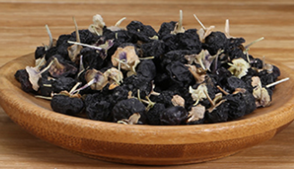
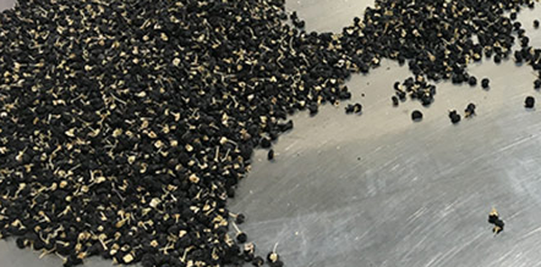

原文连接:https://www.daquan.com/post/13162.html
黑枸杞泡水是有很多好处的，因为黑枸杞是非常滋补的药材。喝黑枸杞有着帮助延迟衰老，滋补养颜的作用，并且黑枸杞还能够提高免疫力预防心脑血管疾病。黑枸杞还能够滋补肝肾，对慢性疾病患者和老年人的作用非常好。
黑枸杞泡水喝的好处
1、 延迟衰老
黑枸杞泡水的好处有着延缓衰老，这是因为黑枸杞中有丰富的氨基酸和维生素，能够有效的抗衰老。黑枸杞中含有非常多的花青素，所以黑枸杞抗衰老的功效非常强，甚至被称为天然的抗衰老的神器。
2、 滋补养颜

黑枸杞有着很好的滋补的作用，并且黑枸杞有着很高的蛋白质和营养物质，是能够滋补养颜的。女性经常喝黑枸杞泡水，是能够有效改善肌肤问题，像长期喝黑枸杞泡水是能够改善皮肤暗淡、帮助淡化雀斑、美白的功效。
3、 提高免疫力
黑枸杞有着很好的提高免疫力的功效，像黑枸杞是能够滋补身体，补肾所以黑枸杞是能够增强免疫力的。特别是长期久病不愈的患者还有长期身体虚弱容易感冒发烧的朋友，平时多用黑枸杞泡水喝能够有效提高免疫力。
4、 预防心血管疾病
长期饮用黑枸杞是可以起到保护血管的作用，因为黑枸杞是能够改善血管循环预防心脑血管疾病的。所以高血压患者是适合饮用的，长期高血压患者是容易出现中风脑血栓、心脏病的，所以高血压患者应该多用改善血管的药物滋补。
5、 滋补肝肾

枸杞有着滋补肝肾的功效，并且黑枸杞滋补肝肾的功效比红枸杞更好，所以黑枸杞是非常适合男性滋补的药材。女性多使用黑枸杞还能治疗痛经、宫寒，但是要注意更年期最好不要使用黑枸杞进行长期滋补。
6、 改善睡眠

黑枸杞有着很好的改善睡眠的功效，睡眠不好是一切疾病的病因，并且睡眠不好是会导致记忆力减退。黑枸杞有着帮助睡眠的作用，是能够提高抵抗力预防疾病，增强记忆力的功效。老年人多会出现觉少失眠，建议老年人长期使用黑枸杞养身。
结语：通过上文的介绍，相信大家都了解了关于黑枸杞泡水喝的好处，黑枸杞能够改善血管循环是非常适合老年人饮用的滋补品。